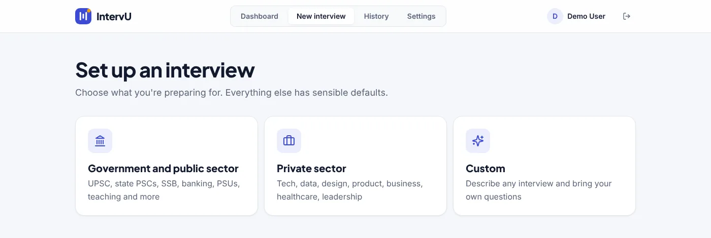
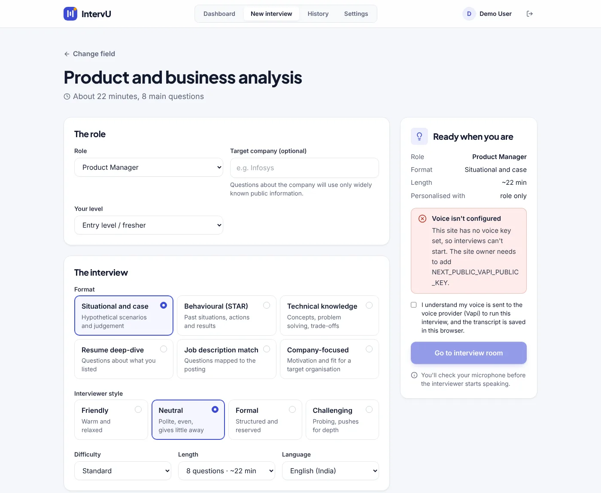
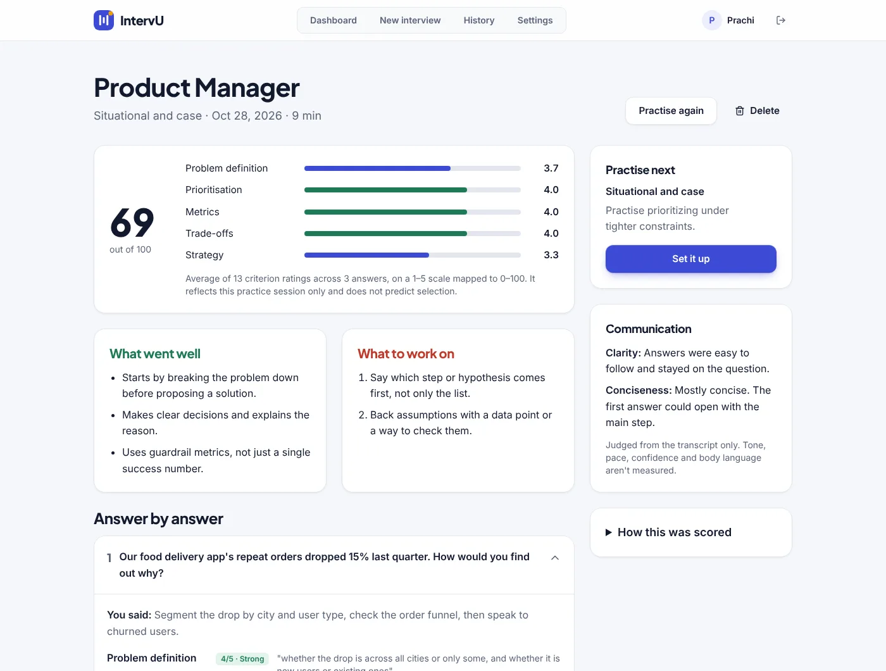

Practice the interview, not just the questions.
The candidate picks what they are preparing for, from UPSC and SSB boards to campus placements and private-sector roles, and then talks with an AI interviewer. It asks one question at a time, waits while they think and follows up on what they actually said. Afterwards each answer is rated against a rubric for that interview type, with evidence quoted from their own words.
The product started as my first version in January 2026 and was later rebuilt and expanded into IntervU, keeping the same core idea: a spoken interview with role-based questions.
Concept to first working version.
My work
- Shaped the product concept: a voice-based mock interview with questions that depend on the job role.
- Built the first working version: sign-up and login, a choice of 20 job roles, resume upload, avatar selection, and a live AI voice interview with a real-time transcript.
- Designed the user flow from choosing a role to finishing the interview.
- Own the repository; the later changes were merged into it through pull requests.
Team work
Teammate Shubham Kumar Singh rebuilt and expanded the product as IntervU: the government and private-sector catalogue, rubric-based feedback reports, cloud accounts, and the automated tests.
The hard part of an interview is the follow-up.
Candidates usually prepare by reading lists of common questions and rehearsing answers in their heads. That does not prepare them for speaking out loud, for a panel that probes a vague answer, or for interviews in Hindi. Mock interviews with real people are hard to arrange, and feedback is often general rather than tied to what was actually said.
Give anyone a realistic spoken interview, on demand, with feedback they can act on.
Who it is for.
| User | Need | How the product responds |
|---|---|---|
| Government job aspirants (UPSC, State PSCs, SSB, banking, PSUs) | Practice the personality test and board interview | A government track that also says whether that recruitment normally includes an interview |
| Private-sector job seekers | Practice for a specific role and company | Role, level, format and target company, with questions from their resume and the job posting |
| Students in campus placements | Get comfortable speaking under pressure | HR and general rounds, with a friendly to challenging interviewer style |
| Hindi speakers | Practice in the language of the real interview | Hindi and Hindi–English mix interviews |
Decisions, requirements and rules.
Product objective
Make a mock interview feel like the real one, spoken and responsive, and make the feedback specific enough that the candidate knows what to fix before the next attempt.
Key decisions
Follow up, don't just ask
Core value- Decision
- One question at a time, with a follow-up based on what the candidate said rather than the next item on a list.
- Why
- Real panels probe vague answers. A fixed list cannot practice that, and it is what makes the product worth using over a question bank.
A score you can trust
Feedback design- Decision
- The AI rates each answer 1 to 5 against a rubric, with evidence from the candidate's words. The app, not the AI, calculates the overall score, and shows none when fewer than three answers were rated.
- Why
- A single number from two answers would look precise without meaning much. Keeping the arithmetic in code keeps it consistent.
Say what is not measured
Trust- Decision
- Feedback covers the words only. Tone, pace, confidence and body language are not measured, and the app says so.
- Why
- Overclaiming would mislead candidates about what they need to work on.
Interviews in Indian languages
Market fit- Decision
- Support Hindi and Hindi–English mix, and a government track alongside the private sector.
- Why
- Many interviews in India, especially for public-sector roles, are not in English only.
Protect the running cost
Business viability- Decision
- AI features need a signed-in user and are rate-limited.
- Why
- Every voice call and report costs money on the AI providers. Without limits, anyone could run up the bill.
How the scope grew
| Area | First version (mine, Jan 2026) | Current version (IntervU, Oct 2026) |
|---|---|---|
| Roles | 20 job roles | Government and private-sector tracks, custom interviews |
| Personalization | Resume upload, avatar choice | Resume and job description, target company, level, style, difficulty, length |
| Interview | Live voice interview, real-time transcript | Follow-ups, pause, mute, skip, repeat, silence nudges |
| Feedback | Spoken comments from the interviewer; no written report | Rubric-based report per answer and history |
| Accounts | Sign-up and login | Cloud accounts with email confirmation, or browser-only |
Business problem
Candidates need affordable, realistic interview practice. The product must deliver a live conversation and useful feedback, while keeping personal data such as resumes private and keeping the cost of AI usage under control.
Stakeholders
| Stakeholder | Interest |
|---|---|
| Candidate | Realistic practice, clear feedback, privacy of resume and answers |
| Product owner | Controlled AI cost, no misuse of paid services, reliable feedback |
| AI service providers (voice and language models) | Usage is billed to the owner's accounts |
Requirements
Retrospective analysis of the current version, based on the repository. Not an original requirements document.
| ID | Requirement | Type | Status |
|---|---|---|---|
| FR-1 | Users create an account and sign in | Functional | Delivered |
| FR-2 | Set up an interview: track, role, level, format, style, difficulty, length and language | Functional | Delivered |
| FR-3 | Upload a resume and job description (PDF, .docx or .txt) to personalise questions | Functional | Delivered |
| FR-4 | Run a live voice interview with pause, mute, skip, repeat and end | Functional | Delivered |
| FR-5 | Produce a feedback report rating each answer with evidence | Functional | Delivered |
| FR-6 | Keep a history of past interviews and reports | Functional | Delivered |
| NFR-1 | No audio recordings kept; uploaded files read in memory and not stored | Privacy | Delivered |
| NFR-2 | Each user can read only their own interviews | Security | Delivered |
| NFR-3 | AI features require sign-in and are rate-limited | Cost control | Delivered |
| NFR-4 | Works without a cloud database, storing data in the browser | Availability | Delivered |
Business rules
- The overall score is the average answer rating mapped to 0–100, and is shown only when at least three answers were rated.
- Uploaded files are limited to 5 MB.
- The call's time limit is set from the interview length the candidate chose.
- The interviewer does not state recent facts, since no live news source is connected, and reports note that recent claims cannot be verified.
- After 25 seconds of silence the interviewer nudges once.
Core workflow
Constraints and known limitations
- Speech-to-text errors can affect feedback, so the evaluator is told to ignore obvious transcription mistakes.
- Older .doc files and scanned PDFs cannot be read; candidates can paste the text instead.
- The microphone needs a secure (HTTPS) site in production.
- Without the cloud database, accounts stay in one browser and do not sync across devices.
A guided set-up, then a conversation.
A Next.js and TypeScript web app. The live call runs in the browser through the Vapi voice platform, and a language model rates the transcript after the call. Accounts and saved interviews use Supabase with row-level security, or the browser alone if no database is configured.



Screens captured from the current version running locally. The report uses sample answers, scored by the app's own scoring code. The live call needs paid voice keys, so it is not shown.
Tested where it could break.
- 65 unit and API tests covering the interview state machine, scoring, the question catalogue and prompts, data storage, cloud sync and the server routes.
- A browser smoke test with a fake microphone checks the flow end to end. It does not test a real conversation.
- Type checking and linting with zero warnings allowed.
What came out of it.
The product works end to end when the voice and AI keys are configured. It has not been launched publicly, so there are no user numbers to report.
What I learned
- A first version is a tool for finding the real value. Building a voice interview showed that the follow-up, not the question list, is what makes practice useful.
- Feedback rules, like when to show a score, are product decisions that decide whether users trust the result.
- AI products have a running cost per use, so access and limits belong in the requirements from the start.
Where it could go next.
- Feedback on delivery, such as pace and filler words, which the product does not measure today.
- A live news source for current-affairs questions in government interviews.
- Launch to a small group of candidates and measure repeat practice and score change over attempts.